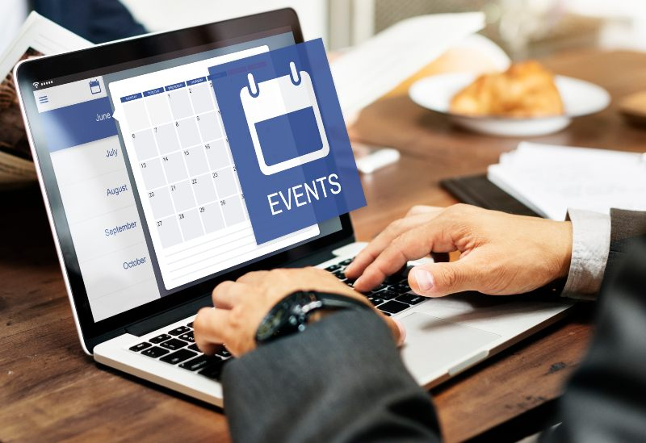

nuestra historia
EvenPlanner Hace una década, en un pequeño garaje de un barrio residencial, dos amigos apasionados por la tecnología y la innovación, Juan y María, se reunían regularmente para discutir ideas y trabajar en proyectos juntos. Ambos compartían una visión común: crear soluciones tecnológicas que impactaran positivamente en la vida de las personas. Con el tiempo, esas reuniones informales se convirtieron en sesiones de brainstorming cada vez más serias y productivas. Sus conversaciones ardientes y su compromiso inquebrantable finalmente dieron lugar a una idea brillante: desarrollar un software que revolucionaría la forma en que se gestionan los eventos. Armados con determinación y una pasión inquebrantable, Juan y María dedicaron horas interminables a diseñar, programar y perfeccionar su producto. Se enfrentaron a numerosos desafíos y obstáculos en el camino, pero su espíritu emprendedor y su creencia en su visión los mantuvieron en marcha. Después de meses de arduo trabajo y dedicación, finalmente lanzaron su software de gestión de eventos al mercado. La respuesta fue abrumadora y rápidamente ganaron reconocimiento por su innovación y su enfoque centrado en el usuario. A lo largo de los años, la empresa creció desde aquel modesto garaje hasta convertirse en una potencia tecnológica reconocida a nivel mundial. Hoy en día, seguimos comprometidos con los mismos valores y principios que nos llevaron a comenzar este viaje emocionante: la pasión por la innovación, el compromiso con la excelencia y, sobre todo, el deseo de hacer una diferencia significativa en el mundo de los eventos.
misión
En EvenPlanner, nuestra misión es simplificar y mejorar la experiencia de planificación y gestión de eventos para nuestros clientes. Nos comprometemos a proporcionar herramientas tecnológicas innovadoras y servicios excepcionales que permitan a nuestros clientes organizar eventos exitosos y memorables de manera eficiente y sin complicaciones. Nos esforzamos por ofrecer soluciones personalizadas y adaptadas a las necesidades individuales de cada cliente, manteniendo siempre un enfoque centrado en la calidad, la excelencia y la satisfacción del cliente.
visión

Nuestra visión en EvenPlanner es convertirnos en el líder indiscutible en el campo de la gestión de eventos, reconocidos por nuestra innovación, nuestro compromiso con la excelencia y nuestro impacto positivo en la industria. Nos esforzamos por ser la primera opción para aquellos que buscan soluciones integrales y confiables para sus eventos, estableciendo nuevos estándares de excelencia y creando experiencias inolvidables para nuestros clientes y sus participantes. Aspiramos a ser un socio de confianza y un impulsor de éxito para nuestros clientes en cada etapa de su viaje de planificación de eventos.